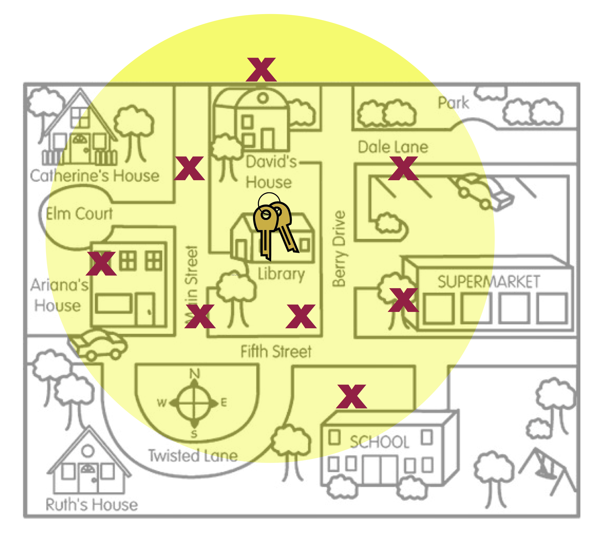

External Validity Evidence and Random Sampling
In statistical inference, generalization refers to the process of using sample data to draw conclusions about the larger population from which the sample was drawn. The sample data provides statisticians with an estimate of the exact “truth” about the population. For example, data collected from 1,000 Americans about their voting preferences may be used to infer the voting preferences of Americans in general. Statisticians are typically concerned with making inferences about some summary measure of the population, a mean or population percentage. (Some vocabulary: Population summary measures are called parameters. Sample estimates of parameters are referred to as statistics.)
How useful is a sample statistic when it comes to estimating a population parameter? Can we draw reasonable inference about a population from sample data? This question is at the heart of weighing evidence about external validity. External validity is the degree to which generalizations to the larger population are accurate and meaningful.
There are two statistical aspects we need to consider when we evaluate evidence for external validity: sampling variation and bias. Sampling variation is the idea that statistics from different samples vary. For example, to use the earlier example, different samples of 1,000 Americans would produce different estimates of voting preferences. This variation needs to be accounted for when estimates are given. One way of thinking about sampling variation is to map it to the quality of precision. (We will focus more on this in Unit 5.)
The second statistical characteristic we need to attend to is bias. Statistical bias is when sample statistics differ systematically from the population parameter. The key here is the word “systematically”. This implies that there is something in the underlying process (aside from random variation) that is affecting the estimation process.
Statistical Bias
To help you think about bias, imagine a person, Arthur Dent, has lost his keys. The actual location of the keys, the Library, is akin to the population parameter. Arthur believes he lost his keys at the Supermarket and searches several places around the Supermarket. The locations where Arthur searches are like sample statistics.

Figure 5: This figure is a metaphor for statistical bias.
Figure 5 is a metaphor for the concept of statistical bias. Arthur’s search locations (sample statistics) are systematically in the wrong place. On average, where Arthur searched (the middle of the yellow circle) is not the actual location of the keys. Compare this with the search locations in Figure 6.
Figure 6: This figure is a metaphor for unbiasedness.
Figure 6 is a metaphor for unbiasedness. On average, where Arthur searched is the location of the keys. There are a couple of other concepts that this metaphor can help us think about.
Even in Figure 6, none of the actual search locations were right at the keys. Some of the locations were too far to the left of the keys, and others were too far to the right of the keys. However, ON AVERAGE, the search locations “found” the keys. The way we define unbiased is that the AVERAGE of the statistics is at the population parameter.
Average has nothing to do with the size of the yellow circle. (The size of the circle is related to the amount of sampling variation, a concept we will deal with in Unit 5.) The two figures below also illustrate unbiasedness (left) and bias (right), despite the size of the yellow circle.
 
- The last concept about bias to point out is that bias (or unbiasedness) is a property of the sampling method. The reason the search locations were not in the right place is because the method Arthur used to pick the search locations was biased. He thought he lost his keys in the Supermarket, so that is where he looked.
An unbiased sampling method is random sampling. Random sampling uses chance to select the sampling units (participants) from the larger population. When random sampling has been employed in a study, the unbiasedness of the sampling method is strong evidence for external validity; we have a much higher belief in generalizations to the larger population. In our validity barometer we would be in the upper-third (depending on other factors such as sample size).

In this course, we will discuss and utilize simple random sampling. To draw a simple random sample we need a list of EVERY member of the population. This list is called the sampling frame. (Obtaining a sampling frame can be very difficult. Try obtaining a list of everyone who lives in the United States!) Then we employ randomness to draw out sampling units, with the caveat that each unit in the sampling frame has an equal chance of being drawn.